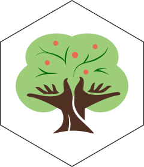

gsdata 
Overview
🌧️🌡️🌍👶📆🇧🇷🧮📉🌾🌱🍚🌽🚜🌳💧☀️🌦️📈
gsdata is an R package designed to facilitate the documentation and sharing of data from Sustentarea’s Global Syndemic Project. See the package website for more information.
Installation
You can install gsdata using the remotes package:
remotes::install_github("sustentarea/gsdata")How to Use
The package provides a preview and documentation for each dataset. You can find a list of available datasets here.
To download them, use the function get_data(). For example, to get the gini dataset use:
get_data("gini")The raw data files can be downloaded using the get_raw_data() function.
get_raw_data("gini", file = "gini.csv")